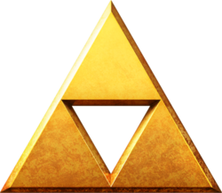

The Triforce
Triforce of Wisdom
The Triforce of Wisdom holds the essence of Nayru, the Goddess of Wisdom,
who is recognized for creating the physical laws of the realm of Hyrule.
It is usually associated with Princess Zelda, and in most games, she possesses it.
When activated, the lower left triangle in the Triforce mark on Zelda's hand glows.
Triforce of Power
The Triforce of Courage contains the divine essence of Farore, the Goddess of Courage,
who is renowned for creating all life that inhabits the Hyrulean realm. It is usually
associated specifically with Link. The Triforce of Courage is typically portrayed as
the bottom-right piece of the Triforce.
Triforce of Power
The Triforce of Power embodies the essence of Din,
the Goddess of Power, who used her "strong flaming arms"
to shape the land and cultivate the red earth on which Hyrule exists.
Her divine essence grants the holder of the Triforce of Power an unlimited
amount of mystical power.
